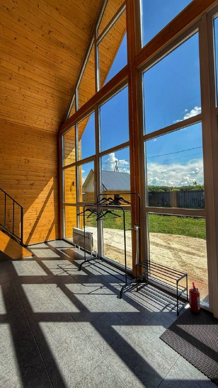
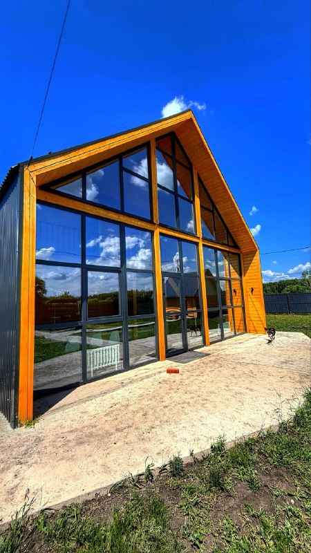
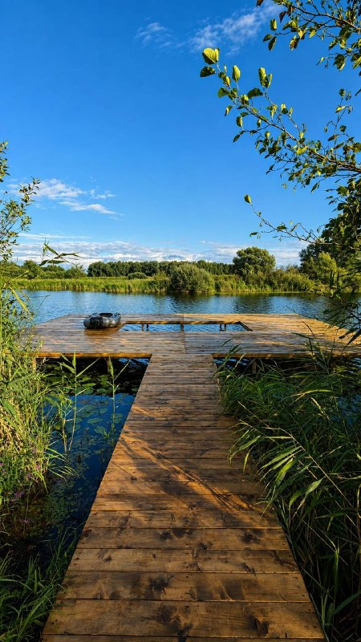
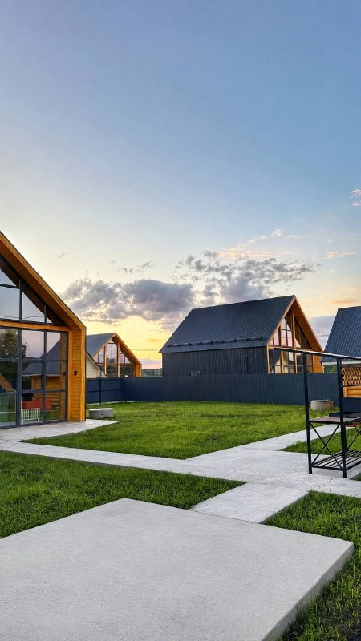
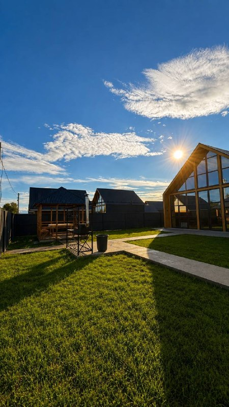
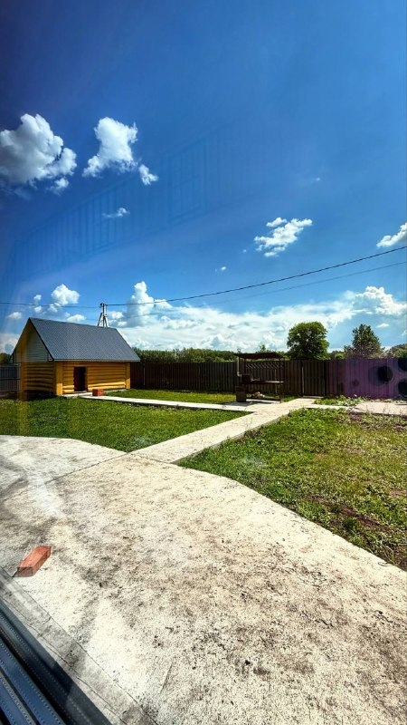
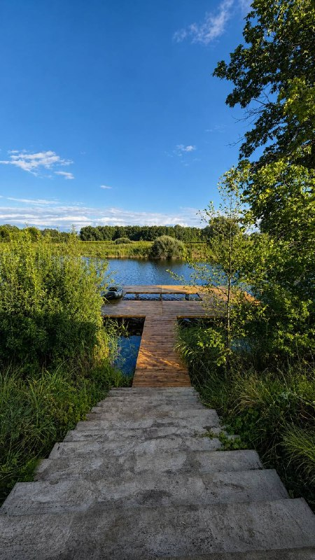
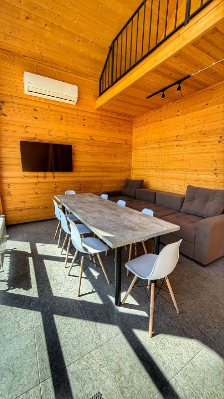
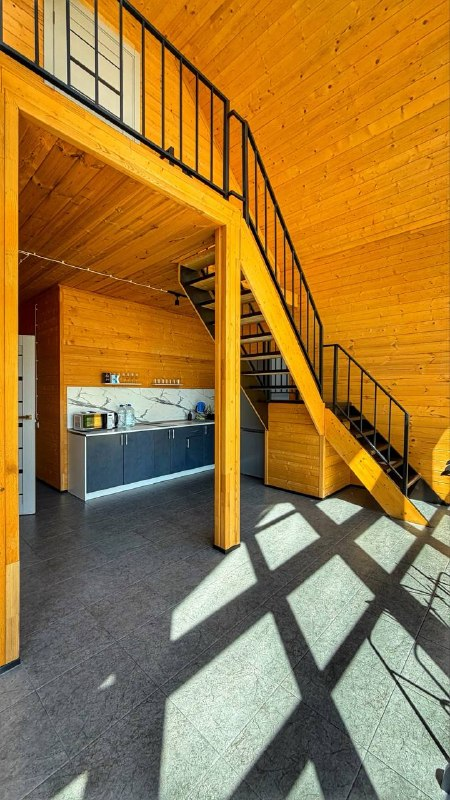
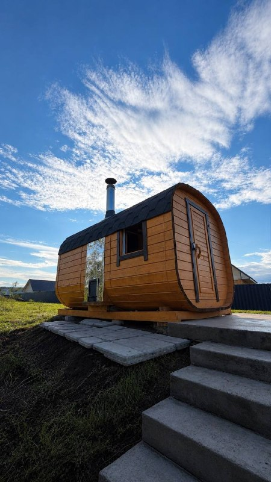

01 / УТРО
Поймать свет
Проснуться без будильника. Открыть окно. Собраться за завтраком.
Дом у озера, тёплый свет в окнах, разговоры до ночи. Iskino Village — пространство для времени со своими.


В Iskino Village день складывается сам собой: завтрак у большого окна, прогулка к воде, общий ужин и разговоры до вечера. Здесь достаточно пространства для компании и достаточно простоты, чтобы просто отдыхать.
↘



Проснуться без будильника. Открыть окно. Собраться за завтраком.

Прогуляться до пирса и задержаться там дольше, чем планировали.

Приготовить ужин, устроиться за столом и никуда больше не ехать.
Дерево, свет и большие окна. Внутри есть всё необходимое для отдыха компанией до 10 человек.
Место, где приятно собраться всем вместе.
Плита, холодильник, посуда и принадлежности.
Спальные места, кондиционер и коммуникации.

На берегу озера, прямо у пирса, стоит баня-бочка. Хороший повод продлить вечер и ещё немного побыть вместе.
Спросить о бане
Никаких случайных картинок: здесь — настоящие фотографии Iskino Village.
Фотографии: публичный канал Iskino Village ↗
Загородный отдых рядом с Уфой. Посмотрите расположение в 2ГИС и напишите нам перед поездкой — подскажем точный маршрут.
Если ответа здесь нет, напишите нам — расскажем подробнее.
Задать вопросВ опубликованном описании указано размещение компании до 10 человек. Подходящие спальные места для вашего состава лучше уточнить перед бронированием.
Оборудованная кухня, плита, холодильник, посуда, спальные места и кондиционер. Если вам нужен конкретный предмет или удобство, уточните это при бронировании.
На берегу озера есть баня-бочка. Свободное время и актуальную стоимость подскажут при обращении.
Укажите даты и количество гостей в форме ниже. Мы подготовим запрос в WhatsApp; итоговую стоимость подтвердят владельцы.
Iskino Village находится в Искино, рядом с Уфой. Откройте поиск в 2ГИС или запросите точный маршрут у хозяев перед поездкой.
Укажите даты и состав компании. Мы откроем WhatsApp с готовым сообщением — останется отправить его и получить подтверждение свободных дат и стоимости.